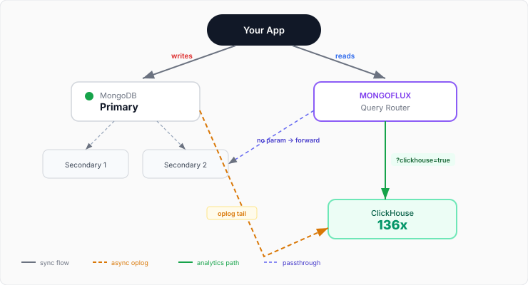
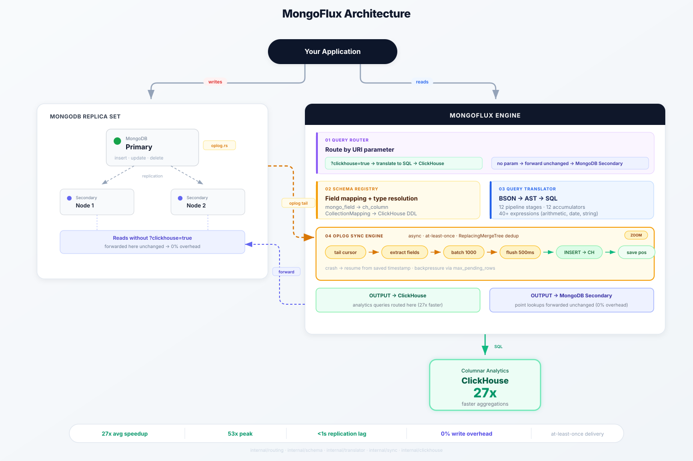
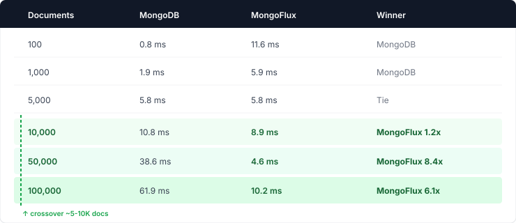
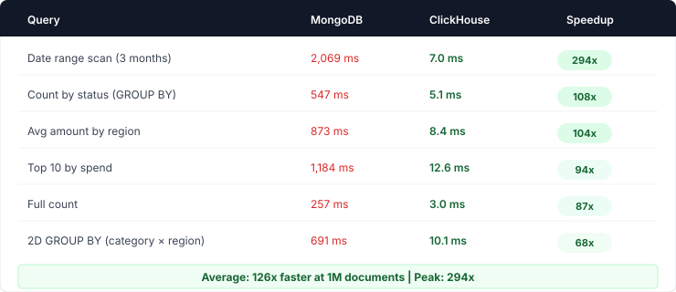
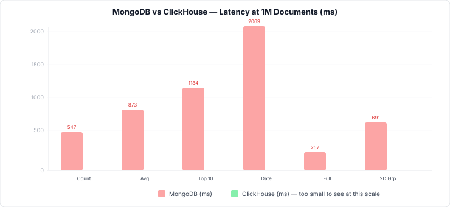
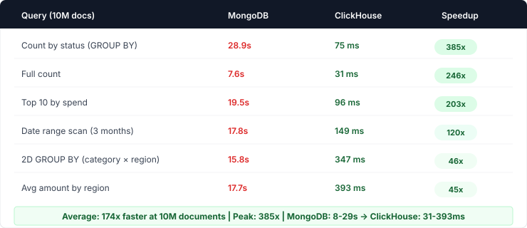
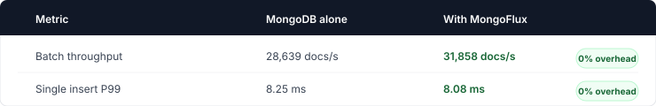

I built MongoFlux — it turns ClickHouse into a transparent "virtual secondary" for your MongoDB replica set. No ETL pipelines. No code changes. No write overhead. Just a query parameter.
We had a MongoDB database with 10 million documents. The transactional workload was fine — point lookups, single-document writes, transactions all ran within acceptable latency. But the moment someone needed analytics — "what's our revenue by region this quarter?" or "show me the top 10 customers by spend" — the system buckled.
A simple $group aggregation over the full dataset took 29 seconds. That's not a dashboard. That's a coffee break.
The standard solutions all follow the same pattern: build an ETL pipeline, maintain a separate data warehouse, accept stale data, and split your application into two paths — one for writes, one for reads. Two connection strings. Two query languages. Two systems to monitor, debug, and keep in sync.
I wanted none of that. I wanted one interface for everything. Same find(), same aggregate(), same MongoDB query syntax. Just faster.
MongoDB already has a mechanism for real-time data replication: the oplog. Every write to the primary gets recorded in local.oplog.rs, and secondaries tail it with a cursor to stay synchronized. What if something tailed the oplog the same way — but instead of replicating to another MongoDB node, it replicated to ClickHouse?
ClickHouse is a columnar analytical database. It's engineered for exactly the queries MongoDB struggles with: full-table scans, GROUP BY over millions of rows, percentiles, time-range aggregations. A query that takes 29 seconds in MongoDB completes in 75 milliseconds in ClickHouse.
The design principle: make ClickHouse behave like a "virtual secondary" in the replica set. Same write stream, zero overhead on the write path, and a query router that transparently sends analytics to ClickHouse while forwarding point lookups to MongoDB unchanged.
That's MongoFlux.
Three things happen simultaneously:
Writes go directly to MongoDB. MongoFlux is not in the write path. Your application writes to the primary exactly as before. MongoDB acknowledges the write before MongoFlux even sees it. This is non-negotiable — any write overhead makes the system unusable.
Replication happens asynchronously. MongoFlux opens a tailable-await cursor on local.oplog.rs — the same mechanism MongoDB secondaries use internally. It extracts mapped fields, batches them into groups of 1000, and flushes to ClickHouse via HTTP every 500ms. Oplog timestamps are persisted to disk for crash recovery.
Reads are routed by a single URI parameter. If the connection string includes ?clickhouse=true, the query gets translated from BSON to ClickHouse SQL and executed there. Otherwise it's forwarded to a MongoDB secondary unchanged. The routing decision happens at the first step — no unnecessary processing for passthrough queries.

High-level data flow — writes to MongoDB, async oplog sync to ClickHouse, reads routed by parameter

MongoFlux Engine internals — read path (Router → Schema → Translator → ClickHouse) and async write path (Oplog Sync)
This was the most interesting engineering challenge. MongoDB queries are expressed as BSON documents — nested, operator-heavy, with a fundamentally different mental model than SQL. Faithful translation requires understanding both semantics.
The translator uses a two-phase AST approach:
Phase 1: Parse. The BSON query — whether a find() filter or an aggregate() pipeline — gets parsed into an internal expression tree. Each node represents an operation: a comparison, a function call, a logical connector, or a column reference.
Phase 2: Emit. The expression tree is walked to produce ClickHouse SQL. Column names are resolved through the schema registry (mapping MongoDB field names to ClickHouse columns), and MongoDB-specific operators are translated to their ClickHouse equivalents.
// Input: MongoDB aggregate pipeline
[{$group: {_id: "$region", total: {$sum: "$amount"}}}]
// Phase 1: Expression tree
GroupNode {
key: ColumnRef("region"),
accumulators: [
Accumulator("sum", ColumnRef("amount"), alias: "total")
]
}
// Phase 2: ClickHouse SQL
SELECT region, sum(amount) AS total FROM orders GROUP BY regionThe translator supports 12 pipeline stages, 12 accumulators, and 40+ expressions covering arithmetic, string manipulation, date extraction, and conditionals. It's not a full MongoDB compatibility layer — it covers the patterns that matter for analytical workloads.
The sync engine is where reliability engineering matters most. Three properties must hold:
Crash recovery. The oplog position is persisted only after a successful flush to ClickHouse. If MongoFlux crashes between receiving an oplog entry and flushing it, the entry replays on restart. ClickHouse's ReplacingMergeTree engine handles deduplication during background merges. This gives at-least-once delivery with effectively exactly-once semantics.
Backpressure. If ClickHouse is slow or temporarily unavailable, the sync engine buffers rows in memory up to a configurable threshold (max_pending_rows). Once hit, it pauses reading from the oplog until the buffer drains. This prevents OOM without data loss — the oplog is durable, we just pause consuming it.
Partial updates. MongoDB's oplog records partial updates as $set operations rather than full documents. For these, the sync engine fetches the current full document from MongoDB and inserts that into ClickHouse. This ensures ReplacingMergeTree always has the latest complete state.
// Core sync loop (simplified)
for cursor.Next(ctx) {
entry := decode(cursor)
switch entry.Op {
case "i": // INSERT
batch.Add(extractFields(entry.Doc, mapping))
case "u": // UPDATE
if isFullReplacement(entry.Doc) {
batch.Add(extractFields(entry.Doc, mapping))
} else {
fullDoc := fetchFromMongo(entry.ID)
batch.Add(extractFields(fullDoc, mapping))
}
case "d": // DELETE
if config.PropagateDeletes {
batch.Add(tombstoneRow(entry.ID))
}
}
if batch.Full() || timeElapsed > 500ms {
clickhouse.InsertBatch(batch)
saveOplogPosition(entry.Timestamp)
}
}Not every MongoDB field needs to reach ClickHouse. The schema registry defines exactly which fields to replicate and how to map them:
{
"collection": "orders",
"clickhouse_table": "orders",
"clickhouse_database": "analytics",
"fields": [
{"mongo_field": "_id", "ch_column": "id", "ch_type": "String"},
{"mongo_field": "amount", "ch_column": "amount", "ch_type": "Float64"},
{"mongo_field": "status", "ch_column": "status", "ch_type": "LowCardinality(String)"},
{"mongo_field": "created_at", "ch_column": "created_at", "ch_type": "DateTime"}
],
"engine": "ReplacingMergeTree",
"order_by": ["created_at", "id"]
}The registry is thread-safe, supports hot reloading via the management API, and generates ClickHouse DDL automatically — including distributed table creation for multi-shard deployments.
All benchmarks ran on a single machine with Docker Compose (no network hops). Real-world numbers will vary, but the relative differences hold because they're driven by the fundamental architectural difference between row-oriented and columnar storage.
At what data size does MongoFlux become faster than MongoDB for aggregations?

The crossover is around 5–10K documents. Below that, MongoDB wins because of HTTP round-trip overhead to ClickHouse. Above that, MongoFlux wins and the gap grows superlinearly — columnar scans are O(columns touched), not O(rows scanned).
Indexes don't help here. They're designed for point lookups and range scans on indexed fields, not full-collection aggregations.


ClickHouse bars are invisible at this scale — that's the point. They exist at 3-12ms while MongoDB is at 250-2000ms.
At 10M documents, MongoDB queries take 8-29 seconds. ClickHouse stays under 400ms. The speedup grows superlinearly because MongoDB's row-oriented scans scale linearly with data size, while ClickHouse's columnar compression keeps query times nearly flat.


MongoFlux adds zero measurable overhead to writes. The oplog tail is a reader — it doesn't participate in the write acknowledgment path. MongoDB acknowledges the write to your application before MongoFlux even sees the oplog entry.
Change Streams are the "official" way to watch for changes in MongoDB. But they add overhead: they route through the MongoDB query engine, require a $match stage, and have higher latency. Oplog tailing is what secondaries actually use — it's the lowest-latency, lowest-overhead path to get changes. MongoFlux supports both modes (Change Streams for Atlas/sharded clusters where direct oplog access isn't available), but oplog mode is the default.
ClickHouse's HTTP interface is simpler, doesn't require a C++ client library, and supports the same batch INSERT syntax. The overhead of HTTP vs native protocol is negligible compared to actual query execution time. And it means MongoFlux has zero C/C++ dependencies — it's pure Go, compiles to a single static binary.
Because of at-least-once delivery semantics. If MongoFlux crashes after inserting a batch but before saving the oplog position, it replays those rows on restart. ReplacingMergeTree deduplicates rows with the same primary key during background merges. This gives effectively exactly-once semantics without requiring exactly-once delivery — a much simpler engineering constraint to satisfy.
The initial design considered implementing the MongoDB wire protocol so MongoFlux could sit transparently between the application and MongoDB. I rejected this because: (1) it's a massive compatibility surface, (2) it adds latency to every operation including writes, and (3) the ?clickhouse=true parameter approach is explicit and debuggable. You always know which path a query took.
Observability. MongoFlux exposes Prometheus metrics at /metrics: rows synced per collection, flush success/failure counts, oplog lag, pending buffer size, and flush duration. Alert on mongoflux_oplog_lag_ms > 5000 to catch replication falling behind.
Graceful shutdown. On SIGTERM, MongoFlux flushes all pending batches, saves the oplog position, and exits cleanly. No data loss on deploys.
Distributed ClickHouse. For multi-shard deployments, MongoFlux generates both the local table (on each shard) and the Distributed table automatically with ON CLUSTER DDL. Add "cluster": "prod" and "sharding_key": "cityHash64(user_id)" to your mapping.
Failure modes. MongoFlux crash → resume from saved position (no data loss). ClickHouse down → retry on next flush (rows buffered in memory). MongoDB primary failover → auto-discovers new primary with 3s backoff. The only scenario with potential data loss is a corrupted oplog position file, which causes MongoFlux to start from the oplog tail.
Initial bulk sync. Currently MongoFlux only captures changes from the moment you start it. Existing data requires a separate backfill. A built-in bulk sync mode is the highest-priority roadmap item.
Partial update handling. Fetching the full document on every $set update adds load to MongoDB. A smarter approach would maintain a local cache or use ClickHouse's ALTER UPDATE for simple field changes. Complex to get right with ReplacingMergeTree semantics.
High availability. Currently MongoFlux is a single process. Production deployments need leader election so a standby can take over on crash. Straightforward with etcd or a MongoDB-based lock, but not built in yet.
git clone https://github.com/mrityunjaysharma/mongo-flux
cd mongo-flux
docker compose up --buildThis starts MongoDB (3-node replica set), ClickHouse, and MongoFlux. Create a mapping via the API, insert data into MongoDB, and query it through ClickHouse. Five minutes from clone to 174x faster queries.
# Create a mapping
curl -X POST http://localhost:9090/api/v1/mappings \
-H "Content-Type: application/json" \
-d '{
"collection": "orders",
"clickhouse_table": "orders",
"clickhouse_database": "analytics",
"fields": [
{"mongo_field": "_id", "ch_column": "id", "ch_type": "String"},
{"mongo_field": "amount", "ch_column": "amount", "ch_type": "Float64"},
{"mongo_field": "status", "ch_column": "status", "ch_type": "LowCardinality(String)"}
],
"engine": "ReplacingMergeTree",
"order_by": ["id"]
}'
# Create the ClickHouse table
curl -X POST http://localhost:9090/api/v1/mappings/orders/syncMongoFlux is written in Go, has zero C dependencies, and compiles to a single binary. The Docker image is 17MB.
MongoFlux sits beside your MongoDB replica set, tails the oplog like a secondary would, replicates to ClickHouse in real-time, and routes analytical queries there transparently. Your application doesn't change. Writes don't slow down. Analytics go from tens of seconds to double-digit milliseconds.
It's not magic — it's using the right storage engine for the right workload, with a sync layer that makes the two systems behave as one.
Go MongoDB ClickHouse Real-time Sync Query Translation OLAP Systems Engineering